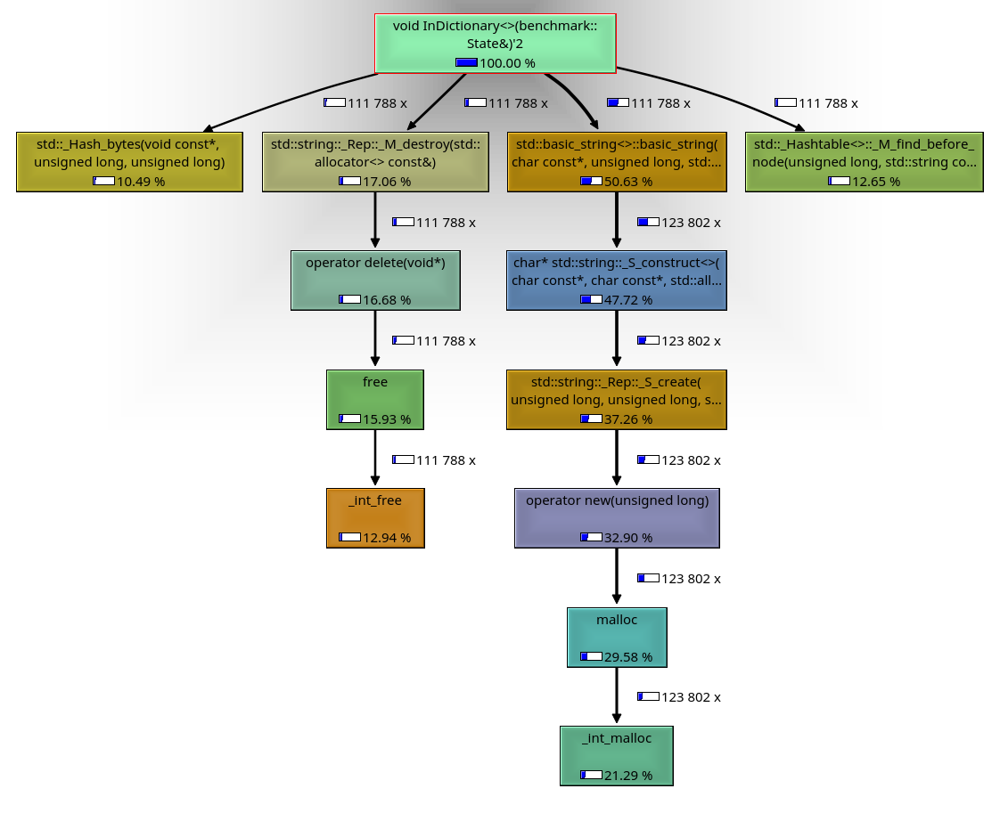
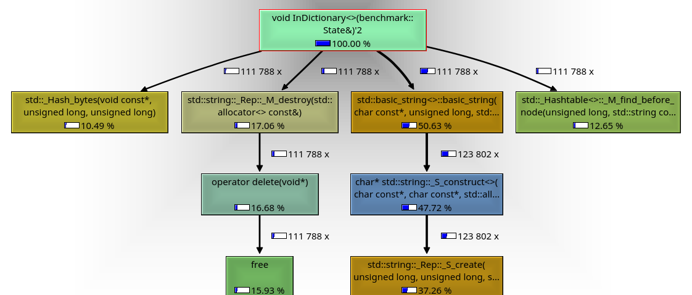
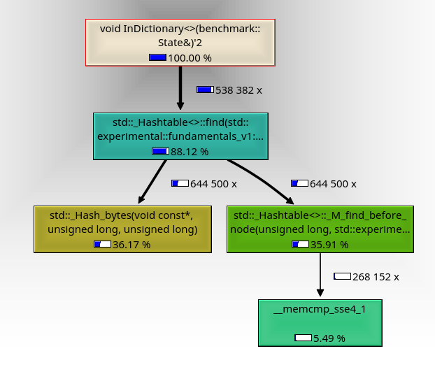
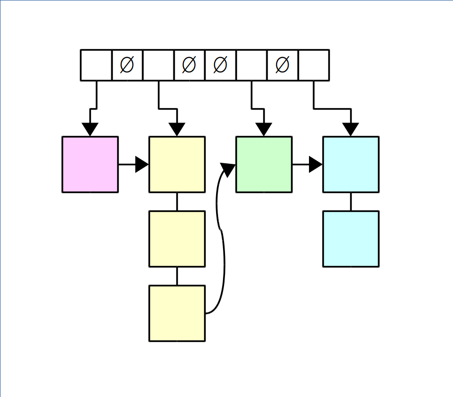
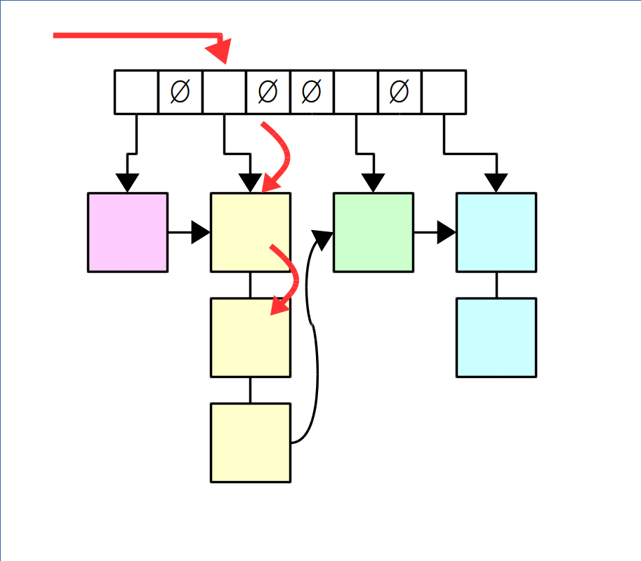
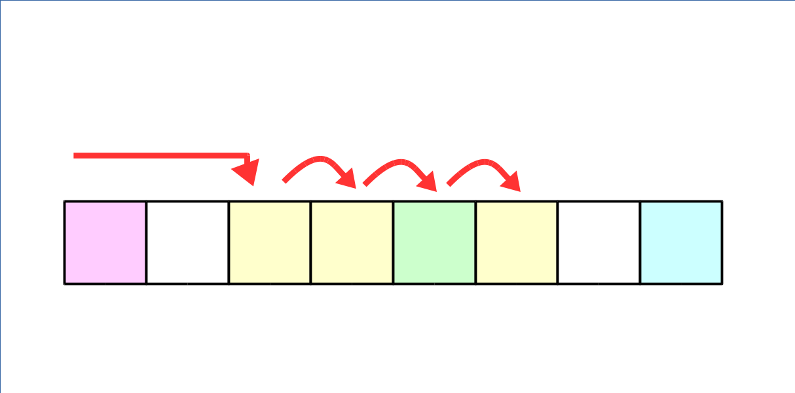

Low Latency Programming
Maciej Gajewski
About me
- M.Sc in Robotics from Wrocław University of Technology
- 30 years of programming
- 20 years of C++
- 8 years in HFT

About this talk
- Based on a Low Latency Workshop by Optiver
- Process of improving latency
- Some useful tools (mostly Linux)
- Actual C++ code
About Optiver
- Amsterdam, Sydney, Chicago, Shanghai
- 1986
- 440 people
- 43 nationalities
What is low latency programming
- It's not about troughput!
- Ability to quickly react to an event
- CPU-bound tasks, IO is outside of the scope
- It's all about time
There is no silver bullet...
- No compiler flags
- No kernel config option
- No library
...but there are golden rules
- Measure
- Measure
- Measure
- Do not optimize prematurely
- Know your hardware
- Know your libraries
- Know your application
How fast is fast?
Step 1
Identify the hot path
Identify the hot path
- Profilers don't work for events
- Know which code is "hot"
- Microbenchmark the hot code
Google Benchmark
- Allows for easy creation of microbenchmarks
- https://github.com/google/benchmark

Today's excercise
class Dictionary
{
public:
Dictionary(const std::vector<std::string>& words);
bool in_dictionary(std::string_view word) const;
};
Google Benchmark
void InDictionary(benchmark::State& state)
{
int idx = 0;
Dictionary dict(words);
for(auto _ : state)
{
std::string_view word = words[idx];
idx = (idx+1) % words.size();
benchmark::DoNotOptimize(dict.in_dictionary(word));
}
}
Google Benchmark
void NotInDictionary(benchmark::State& state)
{
int idx = 0;
Dictionary dict(words);
for(auto _ : state)
{
std::string_view word = unknown_words[idx];
idx = (idx+1) % words.size();
benchmark::DoNotOptimize(dict.in_dictionary(word));
}
}
Google Benchmark
BENCHMARK(InDictionary);
BENCHMARK(NotInDictionary);
BENCHMARK_MAIN();
Google Benchmark
Run on (4 X 3504 MHz CPU s) 2018-01-17 14:19:55 ----------------------------------------------------------------------- Benchmark Time CPU Iterations ----------------------------------------------------------------------- InDictionary 725 ns 725 ns 884585 NotInDictionary 812 ns 811 ns 838950
Step 2
Algorithmic complexity
Naive implementation
class Dictionary
{
public:
Dictionary(const std::vector<std::string>& words)
: _container(words.begin(), words.end())
{}
bool in_dictionary(std::string_view word) const
{
return _container.find({word.data(), word.size()}) != _container.end();
}
private:
std::set<std::string> _container;
};
Naive implementation
class Dictionary
{
public:
Dictionary(const std::vector<std::string>& words)
: _container(words.begin(), words.end())
{}
bool in_dictionary(std::string_view word) const
{
return _container.find({word.data(), word.size()}) != _container.end();
}
private:
std::set<std::string> _container; // <-- O(log(N))
};
Improved implementation
class Dictionary
{
public:
Dictionary(const std::vector<std::string>& words)
: _container(words.begin(), words.end())
{}
bool in_dictionary(std::string_view word) const
{
return _container.find({word.data(), word.size()}) != _container.end();
}
private:
std::unordered_set<std::string> _container; // <-- O(1)
};
Benchmark: Improving algorithmic complexity
Step 3
Allocations
Valgrind
- Instrumentation framework
- Unix only
- Callgrind - profiler
- KCachegrind - GUI
KCachegrind output

KCachegrind output

Improved implementation
class Dictionary
{
public:
Dictionary(const std::vector<std::string>& words)
: _container(words.begin(), words.end())
{}
bool in_dictionary(std::string_view word) const
{
// This line allocates, creating std::string from std::string_view
return _container.find({word.data(), word.size()}) != _container.end();
}
private:
std::unordered_set<std::string> _container; // Stores std::string
};
Non-allocating implementation
class Dictionary
{
public:
Dictionary(const std::vector<std::string>& words)
: _data(words.begin(), words.end())
, _index(_data.begin(), _data.end())
{}
bool in_dictionary(std::string_view word) const
{
return _index.find(word) != _index.end(); // No allocation!
}
private:
std::vector<std::string> _data; // Stores std::string
std::unordered_set<std::string_view> _index; // Stores views
};
KCachegrind output

Benchmark: Removing allocations
Step 4
Cache coherence
std::unordered_map

std::unordered_map

Open addressing

Papi++
- Provides access to Hardware Performance Counters from within the program
- https://github.com/david-grs/papipp
Papi - example use
papi::event_set<PAPI_TOT_INS, PAPI_TOT_CYC, PAPI_BR_MSP, PAPI_L1_DCM> events;
events.start_counters();
// Micro-benchmark loop is here
events.stop_counters();
std::cout
<< events.get<PAPI_L1_DCM>().counter() / state.iterations()
<< " L1 cache misses";
Papi - output
98 L1 cache misses 16 L1 cache misses 7.89 L1 cache misses 6.617 L1 cache misses 6.3805 L1 cache misses 6.03766 L1 cache misses 6.03299 L1 cache misses 6.03683 L1 cache misses
Open addressing implementation
struct Entry
{
std::size_t hash;
const std::string* string = nullptr;
};
std::vector<Entry> hashTable_;
Open addressing implementation
bool in_dictionary(std::string_view word) const
{
auto hash = std::hash<std::string_view>()(word);
auto idx = hash % hashTable_.size();
while (true)
{
const Entry& entry = hashTable_[idx];
// detect bucket
if (!entry.string)
return false;
// detect match
if(entry.hash == hash && *entry.string == word)
return true;
// probe
idx = (idx + 1) % hashTable_.size();
}
}
PAPI++: Cache misses
Benchmark: Open addressing
Step 5
CPU instructions
Perf
- "The official" Linux profiler
- Has access to the same counters as PAPI
- Instruments running binary
- Produces nice reports
- And so much more!
Perf report
0,12 │ mov %edx,0x8(%rsp)
│ mov $0xc70f6907,%edx
0,16 │ → callq std::_Hash_bytes(void const*, unsigned long, unsigned long)@plt
│ auto idx = hash % hashTable_.size();
│ xor %edx,%edx
0,12 │ mov %rax,%r14
18,01 │ div %rbx
│ const_reference operator[](size_type __n) const _GLIBCXX_NOEXCEPT
│ { return *(this->_M_impl._M_start + __n); }
0,08 │ mov %rdx,%rax
│ mov %rdx,%r12
0,47 │ shl $0x4,%rax
0,27 │ add %r15,%rax
│ if (!entry.string)
35,52 │ mov 0x8(%rax),%rdx
0,12 │ mov %rax,%rcx
│ test %rdx,%rdx
0,47 │ ↓ jne 1a4
│ ↓ jmpq 230
│ nop
│ idx = (idx+1) % hashTable_.size();
3,06 │180: lea 0x1(%r12),%rax
│ xor %edx,%edx
5,89 │ div %rbx
│ mov %rdx,%rcx
│ mov %rdx,%r12
Finding offending code
bool in_dictionary(std::string_view word) const
{
auto hash = std::hash<std::string_view>()(word);
auto idx = hash % hashTable_.size(); // <-- Flagged by perf
while (true)
{
const Entry& entry = hashTable_[idx];
// detect bucket
if (!entry.string)
return false;
// detect match
if(entry.hash == hash && *entry.string == word)
return true;
// probe
idx = (idx + 1) % hashTable_.size(); // <-- Flagged by perf
}
}
Fixing offending code
bool in_dictionary(std::string_view word) const
{
auto hash = std::hash<std::string_view>()(word);
auto idx = hash & (hashTable_.size() - 1); // Fixed?
while (true)
{
const Entry& entry = hashTable_[idx];
// detect bucket
if (!entry.string)
return false;
// detect match
if(entry.hash == hash && *entry.string == word)
return true;
// probe
idx = (idx + 1) & (hashTable_.size() - 1); // Fixed?
}
}
PAPI++: Instructions per cycle
Benchmark: Removing DIV
Summary
- Always measure
- Keep an eye on algorithmic complexity
- Avoid allocations
- Use cache efficiently
- Look into generated assembly
The last slide
- https://github.com/maciekgajewski/LowLatencyProgrammingPresentation
- “When a Microsecond Is an Eternity", Carl Cook, CppCon 2017
- "What every programmer should know about memory", Ulrich Drepper, 2007
- Papi++ : https://github.com/david-grs/papipp
- Google Benchmark
- Valgrind, Callgrind, KCachegrind
- perf
- http://hr.gs/cambridge